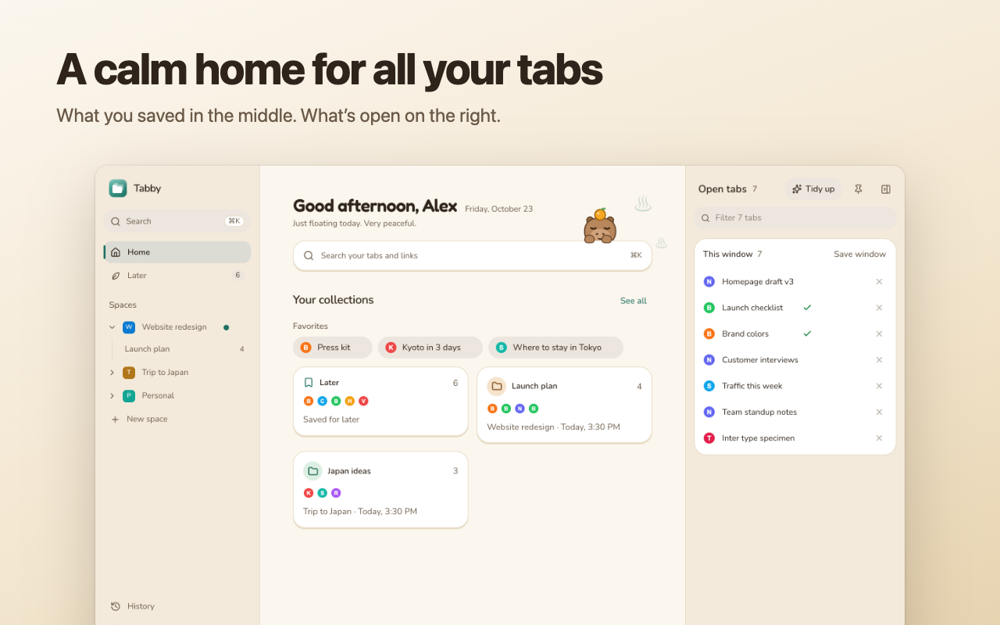

What Tabby does
Each one has a short video: all Tabby tutorials.
Save, then close
Save any tab to Later or a collection and close it. A ✓ shows what's already saved. Watch how (1:55)
Tidy up in a minute
Start from a plan: close the copies, sleep what you aren't using, save the rest. Or review each tab. Undo puts it all back. Watch how (2:17)
Bring it back
Closed a window by mistake, or the browser crashed? Every window is kept for 14 days. Watch how (1:39)
Free up memory
Sleep the tabs you aren't using and see how much memory came back. Watch how (1:27)
Find anything with ⌘K
Search open tabs, saved links and collections in one place. Watch how (1:24)
Make it yours
29 themes with fonts and icons to match. Six are free, including Graphite, Dracula and Sakura. Watch how (1:13)
Your language, no account
In 12 languages. Save as many links as you like; everything stays on your device.
See Tabby 1.2 in under a minute
The calmer Home, Tidy up with a plan, 29 themes and 12 languages. More videos on YouTube.





What people say
5.0 from 3 ratings on the Chrome Web Store
“With Chrome tab groups I had to keep every tab open, and it made my laptop slow. Close them and I’d have to group them all again, and they crowd the top bar. Tabby keeps them out of the way and shows up every time I open a new tab, so it’s one click. The vertical layout is easier on my eyes too.”
Tiny
“My tabs finally have a home 🏡 Calm, fast, private, and so easy to use. Tabby is a tiny joy in my day.”
T Nhan Tran · Chrome Web Store
“It’s easy for everyone to sort and close tabs at the end of the day 🎉”
@th-phnn
“Good and lightweight extension.”
Trung Bùi · Chrome Web Store

Save the tab you’re on
Press Alt+Shift+S or click the toolbar icon, pick a collection (or type a new one) and press Enter. Tabby remembers where you saved it last.
Pricing
Free for everything you need every day. Pro for people who run many projects at once.
Free
$0 forever
- Unlimited saved tabs, collections and spaces
- Tidy up: close copies, sleep idle tabs, or review each tab
- Bring back closed windows and tabs (14 days), Trash
- Sleep tabs and see the memory you got back
- ⌘K search, favorites, duplicate cleanup
- 6 themes: Graphite, Catppuccin, Dracula, Zen Garden, Sakura, Capy Chill
- 12 languages
- Import from Toby, OneTab and bookmarks
- No account; everything stays on your device
Pro
$4 / month
or $29 / year
- Everything in Free
- 23 more themes, such as Tokyo Night, Rosé Pine, Gruvbox, Neon Alley and Arcade
- Tidy up straight into collections (1–9)
- Switch windows between unlimited spaces (free: 5)
- 14-day free trial, no card needed
Founding member
$49 once
- Pro for life, including future Pro features
- Launch offer: first 100 buyers only
Prices in USD; sales tax or VAT may be added at checkout. Payments are processed by our reseller Creem (creem.io), the Merchant of Record. 30-day money-back guarantee, see the refund policy.
Questions
What is Tabby?
Tabby is a free tab manager extension for Chrome, Edge, Brave, Arc and Firefox. It turns your new tab page into one place for the tabs you have open and the links you saved, so you can close tabs without losing them.
Is Tabby free?
Yes. Unlimited saved tabs, collections and spaces, Tidy up, restoring closed windows, Sleep and import are free with no account. Tabby Pro ($4 a month or $29 a year, 14-day free trial with no card) adds 23 more themes (29 in all), Tidy up straight into collections and switching windows between unlimited spaces (free: 5).
Does Tabby need an account? Where are my tabs stored?
No account is needed. Everything you save is stored only in your browser on your device (IndexedDB and extension storage). Tabby never sends your tabs, links or browsing anywhere; see the privacy policy.
How do I switch from Toby or OneTab?
Export your data from Toby (.json) or OneTab (.txt), then import the file on Tabby's welcome screen or in Settings → Your data. Browser bookmarks (.html) work too. Compare: Tabby vs Toby, Tabby vs OneTab.
Can I get back a window I closed by mistake?
Yes. Tabby keeps every closed window and closed tab for 14 days, even after a browser crash. Open History and click Restore to bring the whole window back.
Does Tabby save memory?
Yes. Sleep puts the tabs you aren't using to sleep in one click and shows how much memory came back (in Chrome). Sites you choose, such as chat apps, are kept awake.
Can I back up my saved tabs?
Yes. Export a backup any time, or turn on automatic daily or weekly backups in Settings. Backups are a Tabby file or a bookmarks file that any browser can import.
Is there a Toby or OneTab alternative for Firefox?
Yes. Tabby runs in Firefox 140 or newer (from Firefox Add-ons) as well as Chrome, with the same free features, and imports your Toby (.json) or OneTab (.txt) export.
Which browsers does Tabby work in?
Chrome, Edge, Brave and Arc (from the Chrome Web Store) and Firefox 140 or newer (from Firefox Add-ons). Safari is not supported yet.
Install
Free to install. Works in Chrome, Edge, Brave, Arc and Firefox 140+.